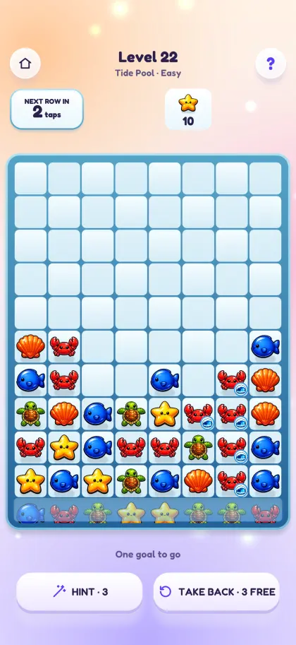

Tide Pool: the rising-rows blast puzzle
By the Sultan of Niyyat team, who make Puzzle Jar. Last updated .
Tide Pool is the tap-to-blast game in Puzzle Jar where the danger comes from below. Tap two or more touching sea creatures of one kind to pop them. Every few taps the tide pushes a new row up from the bottom of the pool, and if a column is pushed past the top, the level is lost. Reach the goals before that happens. There is no move limit and no clock: the tide only moves when you tap.

On this page: 12 questions
- How do you play Tide Pool?
- When does the tide push a new row up?
- How do you lose in Tide Pool?
- How do you win a level of Tide Pool?
- How do waves work in Tide Pool?
- Where is the best place to make a wave?
- Should I pop small pairs in Tide Pool?
- What are rocks, mossy rocks and seaweed?
- What does the Tide out rescue do?
- What does a hint show in Tide Pool?
- Is Tide Pool timed like older rising-rows games?
- Does Tide Pool get harder later on?
How do you play Tide Pool?#
Tap a group of two or more matching creatures that touch: red crabs, blue fish, yellow starfish, green turtles, orange shells or purple jellyfish. They pop, and the creatures above them drop down into the gap. Nothing new falls in from the top. Instead, a counter at the top left tells you how many taps are left before the tide pushes in the next row.
When does the tide push a new row up?#
After a set number of taps, shown as "Next row in" at the top of the screen. Level 1 is slow, with a new row every 5 taps; after that the tide comes every 3 taps, or every 2 on many levels. The incoming row is visible faintly through the water below the pool, so you always know which creatures are about to arrive.
How do you lose in Tide Pool?#
By overflow: the tide pushes in a row while some column already reaches the top of the pool. The top row turns red as a warning when any column is one row from the top. If there is nothing left to tap, rows keep coming in until there is, so an empty-looking board is not always safe either.
How do you win a level of Tide Pool?#
Finish every goal shown at the top, and the level ends right away. Early goals ask you to collect creatures of one or two kinds. From level 4 some levels ask you to ride out a number of rows instead, which means surviving while that many rows come in. Later levels add rocks to break as a goal too.
How do waves work in Tide Pool?#
Pop 5 or 6 creatures at once and a small wave is left where you tapped; it washes away its whole row. 7 or 8 make a medium wave, which takes its row and the one above. 9 or more make a big wave: its row, the one above and the one below. Tap a wave to set it off, and any wave it hits goes off too. Creatures in a group big enough wear a small wave badge before you tap.
Where is the best place to make a wave?#
Low in the pool. A wave washes away whole rows, and the bottom rows are the fullest, so a wave set off near the bottom clears more than the same wave near the top. Clearing a full row also lowers every column by one at once, which is exactly what keeps the tide from overflowing the pool.
Should I pop small pairs in Tide Pool?#
Only when you need to. Every tap moves the tide closer, and a pair clears just two creatures while the tide adds a whole row of 7 or 8. Bigger groups clear more per tap and can leave a wave. When the pool is nearly full, though, a quick pop that brings the tallest column down is worth more than waiting for a perfect group.
What are rocks, mossy rocks and seaweed?#
Rocks (from level 8) can't be tapped; they break when creatures right next to them pop, and mossy rocks (from level 20) take two hits. Seaweed (from level 14) wraps a creature so it can't be tapped or grouped until a creature beside it pops. Both can arrive with the rising rows, so check the waiting row for trouble before you tap.
What does the Tide out rescue do?#
The tide goes out and the bottom 4 rows drain away, giving the pool plenty of room again. The tide can be sent out twice per level, once for a video if you want it that way. Taps made before a rescue can't be taken back afterwards, so a rescue you have used can't be undone by mistake.
What does a hint show in Tide Pool?#
A ring around the exact square to tap. Our careful player picks it by playing every tap together with the best tap after it, already knowing which rows the tide will bring; it keeps the pool low, the goals moving and waves in hand for later. If you wait 6 seconds, the biggest group glows for free.
Is Tide Pool timed like older rising-rows games?#
No. In many classic rising-row games, new rows creep up on a clock, so speed matters. In Tide Pool the tide counts your taps, not seconds, which turns it into a thinking game: you can study the pool and the waiting row for as long as you like before each tap.
Does Tide Pool get harder later on?#
Level 1 is a 7 by 10 pool with four kinds of creature, a row every 5 taps and a goal of 12 fish; it can't be lost.